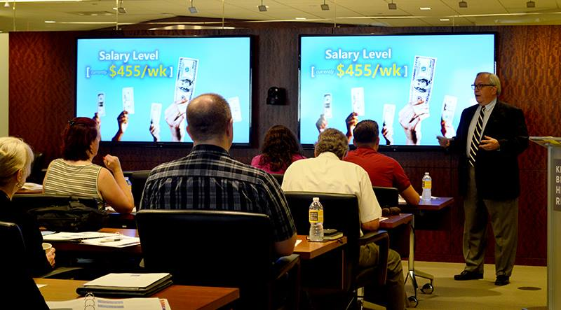
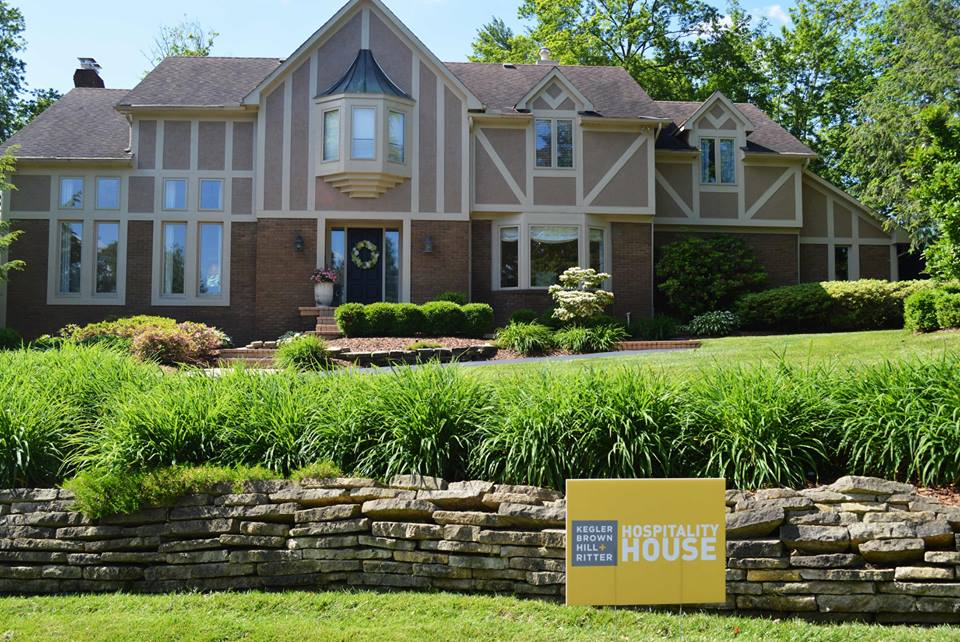
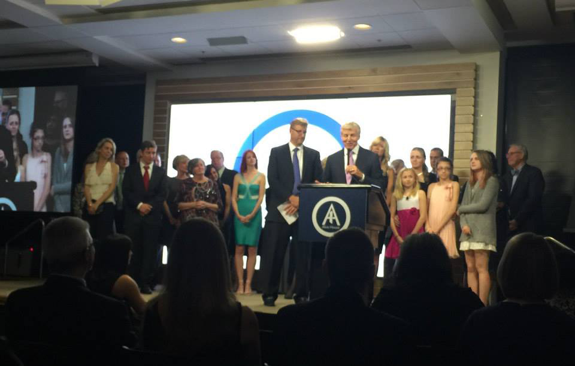

|  | Department of Labor Overtime Strategy SessionThis was one of the first events where I took the lead on planning the logistics. This event focused on new overtime rules that were being implemented during the Obama Administration. The goal of the event was to inform our clients of these new rules and how they can avoid being in violation of them. The event being such a success, we ended up holding two more - each with around thirty people in attendance. Click on the title to view the invitation. |
|  |
3rd Annual Memorial Tournament Hospitality HouseThis was one of my favorite events to plan. It was a four day event from Thursday-Sunday during the PGA Memorial Tournament. This event required a lot of organization and coordination with various outside vendors. After planning the 2nd Annual Memorial Tournament Hospitality House, we learned from out mistakes -ordering tents a head of time in case of rain- and came up with new ideas for branding opportunities, like the Kegler Brown flag. |
|  |
2nd Annual Evening of LightDuring my junior year of college, I intered at Alvis, a nonprofit in Columbus which focuses on adults with deveoplment disabilities and individuals affected by the criminal justice system. One of my main duties as the Communications and Research Development intern was planning their annual fundraiser, Evening of Light. This event supports their Families and Children's Program, which allows for parents who were in the criminal justice system reconnect with their children. We also honored the Grote Family, whose comapny, 'Dontatos', hires past offenders. Through our efforts, we were able to raise over $180,000 for the program. Click on the title to see the newsletter thanking our donors and attendees. |